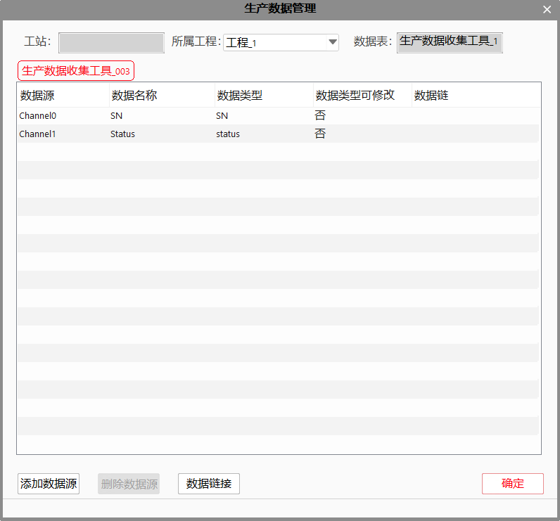

当工程的工具量比较庞大时，在工程中查找修改生产数据收集工具的操作繁琐且费时。生产数据管理将所有生产数据收集工具的信息汇总在同一界面中，很大程度上方便用户的数据收集操作。该界面主要用于对工程中生产数据收集工具进行集中管理。
生产数据管理可以自动遍历工程中所有的生产数据收集工具，并可以针对选定的工具进行数据源的配置操作，如添加数据源、删除数据源、重命名数据源、修改数据源类型、链接数据等操作。生产数据管理界面如下图所示。

工站：显示当前解决方案的名称；
所属工程：显示当前Tab选定生产数据收集工具所在工程的工程名；
数据表：显示当前Tab选定生产数据收集工具的数据表名；
添加数据源：对当前选定生产数据收集工具添加数据源；
数据源支持的个数最大是32个。一个生产数据收集工具对应于数据库里面的一个数据表，生产数据收集工具的数据源就相当于单个数据表中的单个列，数据源名称就相当于列名，数据源的个数也就决定了表中列的个数；
添加数据源时，可选定修改数据源的数据类型与重命名；
删除数据源：删除当前选中的数据源；
数据链接：打开当前选定工具的数据链接界面，并可以选择数据链接；
注意
在配置数据源时，一共可以支持13种的基本数据类型，主要可以收集的数据类型有：double、int、bool、string、int64、char、float、long、short、wstring、unsigned char、unsigned long和 unsigned short类型。
为了满足历史回看功能的需要，另添加了SN、status与image三种自定义数据类型，其基础数据类型分别为string、bool和string，其中SN表示当前产品的唯一标识码，status表示当前生产状态，image表示保存图像的完整路径以实现图像的历史回看；
为了与历史回看功能相配合，该界面内强制在数据表中添加SN和status两数据源，该两类数据源不允许重命名、类型修改与删除，若不需要此信息，则不必对此数据源进行数据链接；
若需要在历史回看功能中支持对图像的回看显示，则添加的图像数据源一定要选择image类型，且链接的数据为该图像的保存的完整路径（图像保存工具或屏幕截图工具的“文件路径与文件名”输出）；